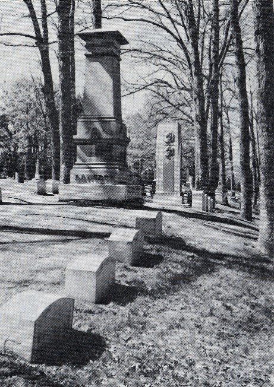
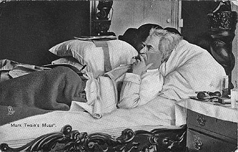
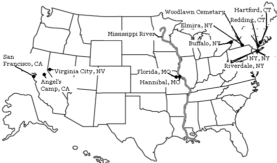

Woodlawn Cemetary
Elmira, NY
1910
"Is--is he dead?" Mark Twain, Innocents Abroad

picture courtesy of Mark Twain in Elmira
"In her loss I am almost bankrupt, and my life is a bitterness, but I
am content: for she has been enriched with
the most precious of all gifts--that gift which makes all other gifts
mean and poor--death. I have never wanted
any released friend of mine restored to life since I reached manhood. I
felt this way when Susy passed away;
and later my wife, and later Mr. Rogers. When Clara met me at the
station in New York and told me Mr. Rogers
had died suddenly that morning, my thought was, Oh, favorite of
fortune--fortunate all his long and lovely life--
fortunate to his latest moment! The reporters said there were tears of
sorrow in my eyes. True--but they were for
me, not for him. He had suffered no loss. All the fortunes he
had ever made before were poverty compared with
this one." Autobiography, 408
Back
to Redding

